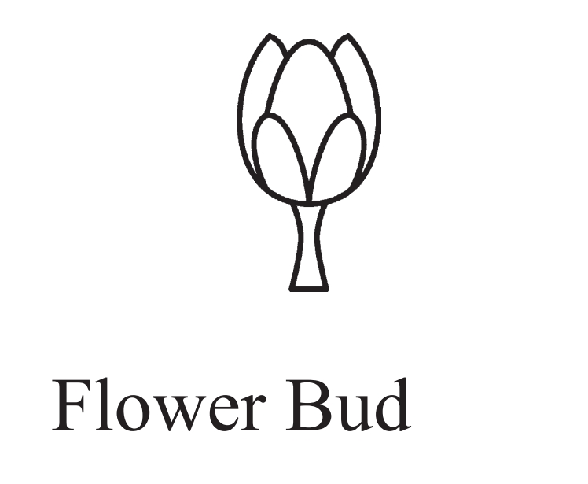
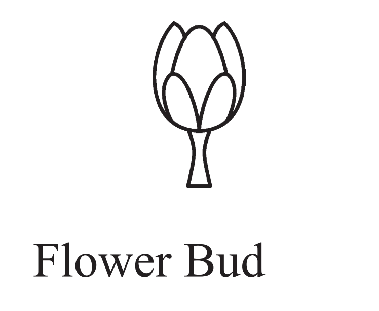

Personal Information
 

- Full Name: Namal Rajapaksa
- Date of Birth: April 10, 1986 (Age 38)
- Nationality: Sri Lankan
- Ethnicity: Sinhalese
- Religion: Buddhism
- Education:
- Primary and Secondary Education: S. Thomas' College, Mount Lavinia
- Bachelor’s degree in Law from the University of London
- Profession: Politician, Lawyer
- Spouse: Ayanka Rajapaksa
- Children: One child
- Residency: Colombo, Sri Lanka
Political Status
- Current Position: Member of Parliament for Hambantota District
- Political Party: Sri Lanka Podujana Peramuna (SLPP)
- Previous Positions: Minister of Youth Affairs and Sports
Political Background and Career
- Entered Parliament in 2010, representing the Hambantota District.
- Held ministerial positions, including Minister of Youth Affairs and Sports.
- Prominent figure in the SLPP and a key supporter of President Gotabaya Rajapaksa.
- Advocates for economic development and youth empowerment.
Notable Political Initiatives and Contributions
- Youth Empowerment: Implemented programs to engage and support youth in various sectors.
- Sports Development: Promoted sports and developed infrastructure for athletic activities.
- Economic Development: Focused on projects aimed at boosting local economies and creating job opportunities.
2024 Presidential Election
- Presidential Candidate (2024): Running on a platform of national development, youth empowerment, and strong governance.
- Campaign Focus:
- Enhancing economic development through infrastructure and investment.
- Empowering youth and creating opportunities for growth.
- Strengthening governance and promoting transparency.
- Election Symbol: The Telephone, symbolizing communication and connectivity.
Promises to the Country
- Economic Growth: Commit to driving economic growth through strategic investments and development projects.
- Youth Opportunities: Enhance programs and initiatives that create job opportunities and educational advancements for the youth.
- Good Governance: Ensure transparency, accountability, and effective governance in all sectors.
- Infrastructure Development: Invest in infrastructure projects to improve transportation, healthcare, and education facilities.
- Environmental Sustainability: Promote sustainable practices to protect Sri Lanka’s natural resources and environment.
Political Achievements
- Youth and Sports Initiatives: Successfully implemented programs to enhance youth participation in sports and development.
- Development Projects: Contributed to several key development projects in the Hambantota District.
- Leadership: Recognized for his leadership role in the SLPP and his support for the government’s agenda.
Controversies & Criticisms
- Political Dynasties: Criticized for being part of a political dynasty and concerns over nepotism.
- Allegations of Mismanagement: Faced criticism over perceived mismanagement of certain projects.
- Public Perception: Struggled with public perception issues related to his political career and actions.
Personal & Family Life
- Family: Married to Ayanka Rajapaksa, with one child.
- Lifestyle: Known for his active involvement in social and community activities.
Visual and Symbolic Representation
- Appearance: Often seen in formal and traditional attire reflecting his public role.
- Election Symbol: The Telephone, representing his focus on communication and connectivity.
Color and Branding
- Campaign Colors: Yellow (symbolizing optimism, energy, and innovation) and White (symbolizing purity and integrity).